सिरमानी की लड़ाई (1971)
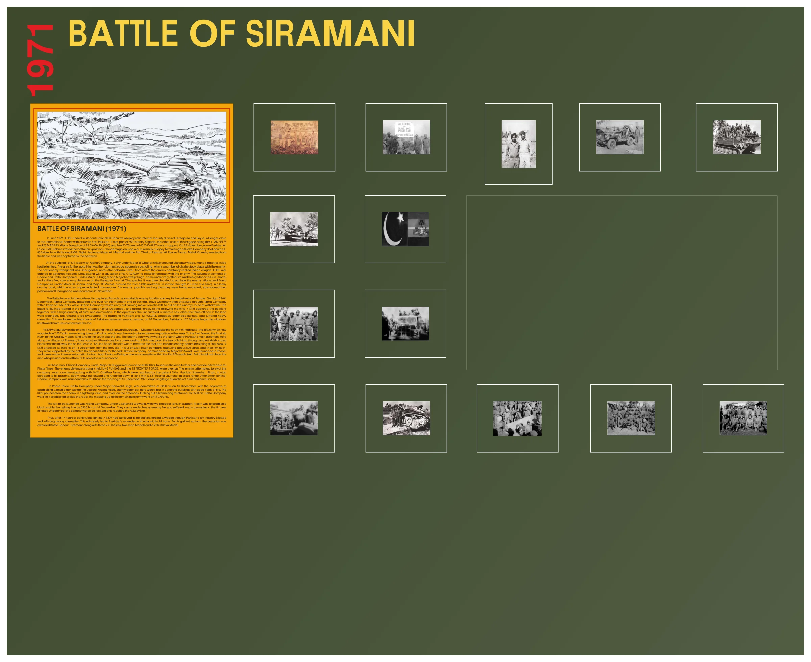
बैटल गैलरी चित्र
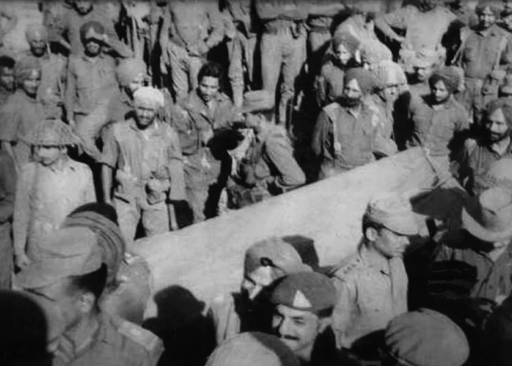
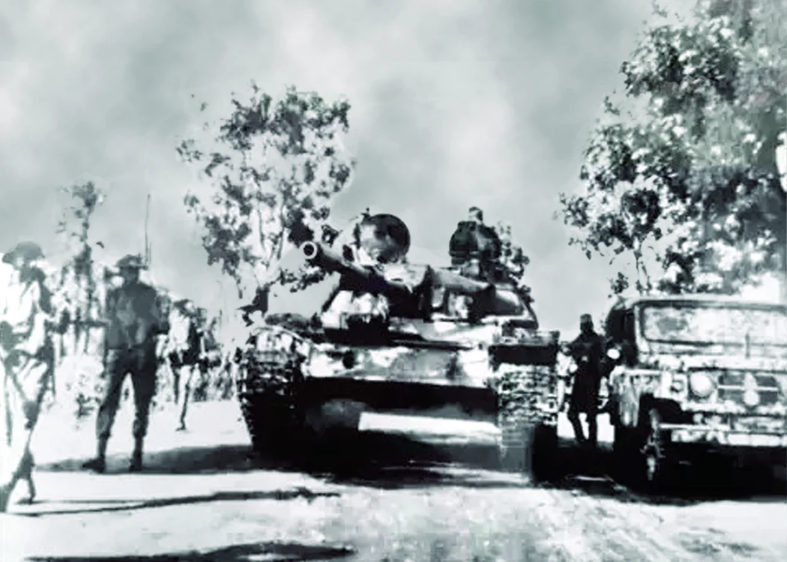
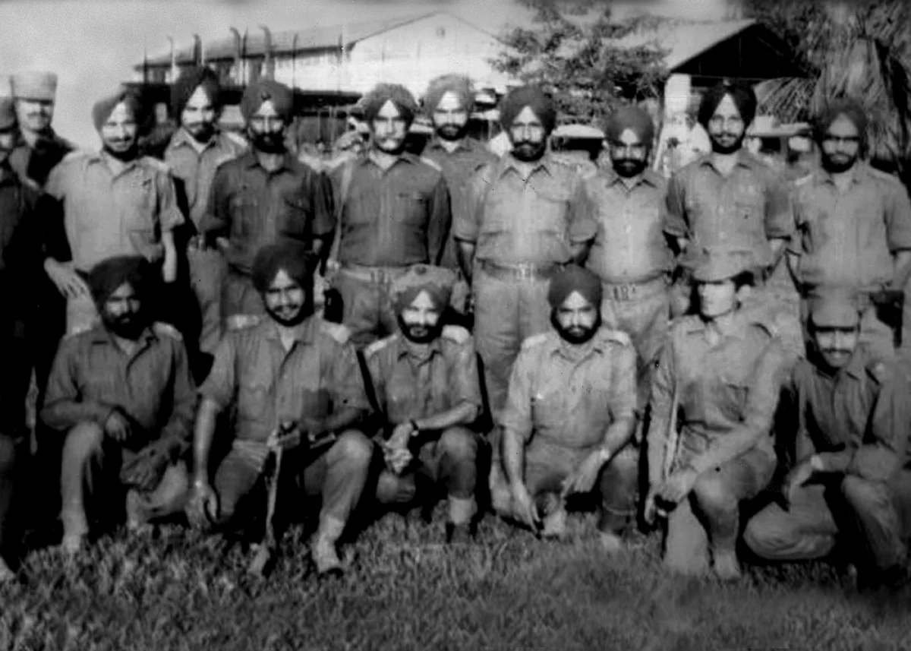
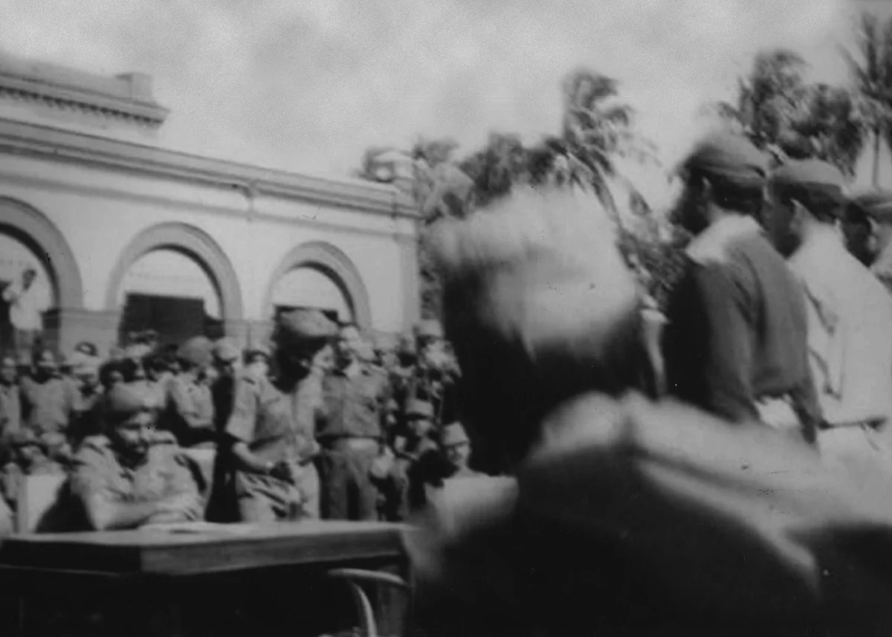
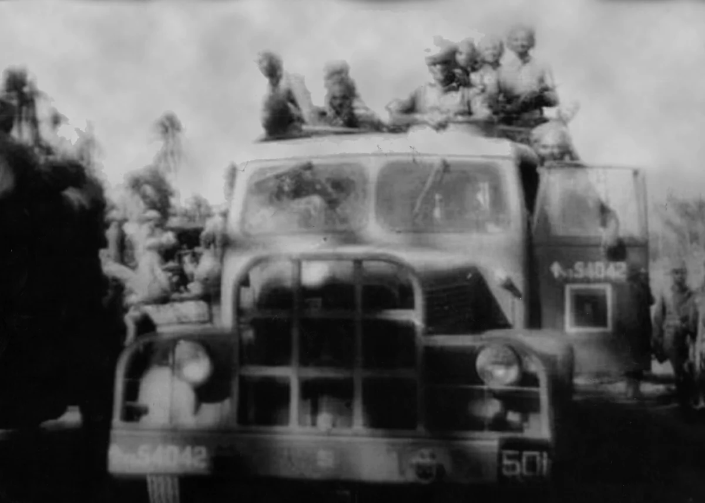
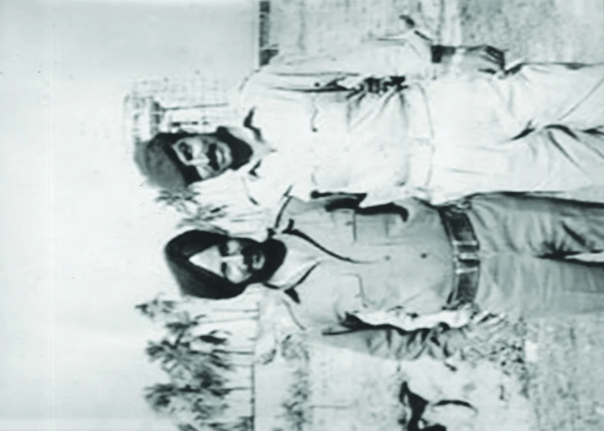
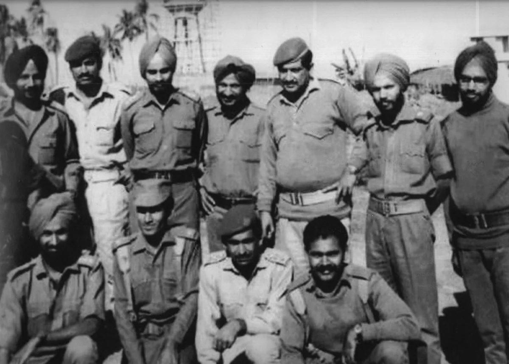
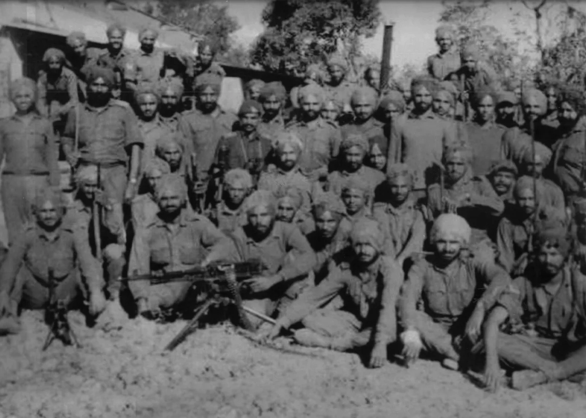
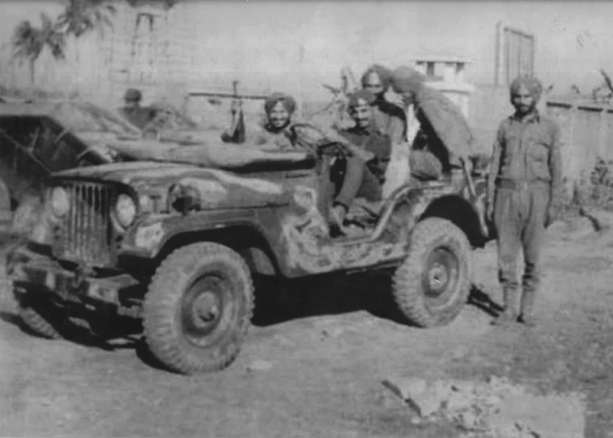
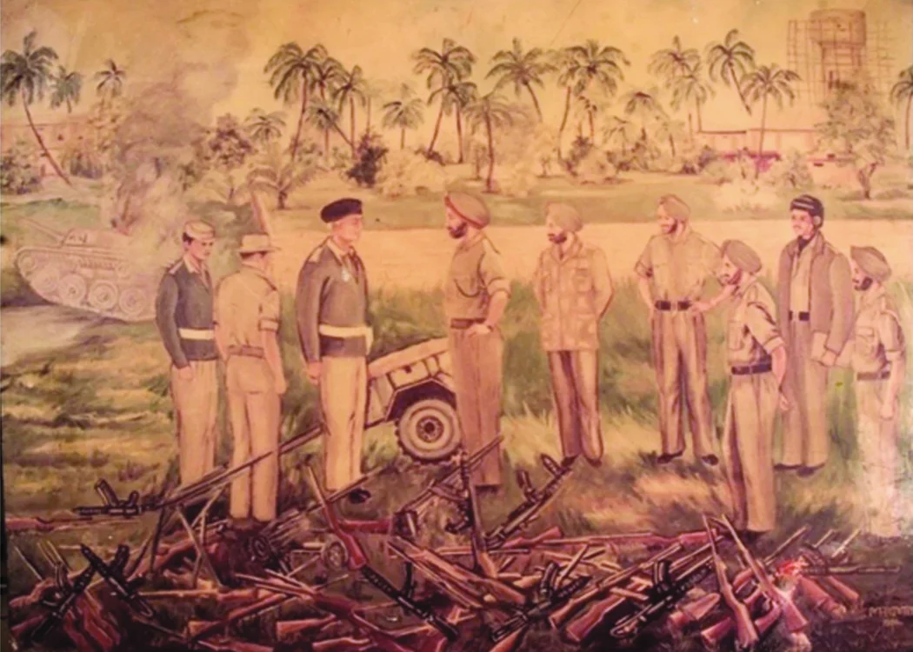
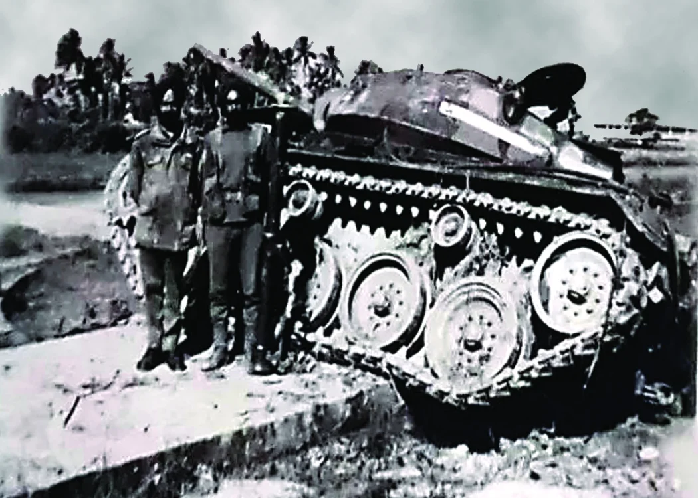
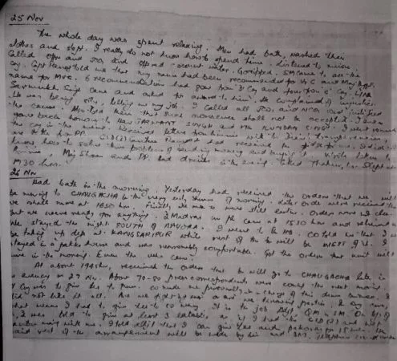
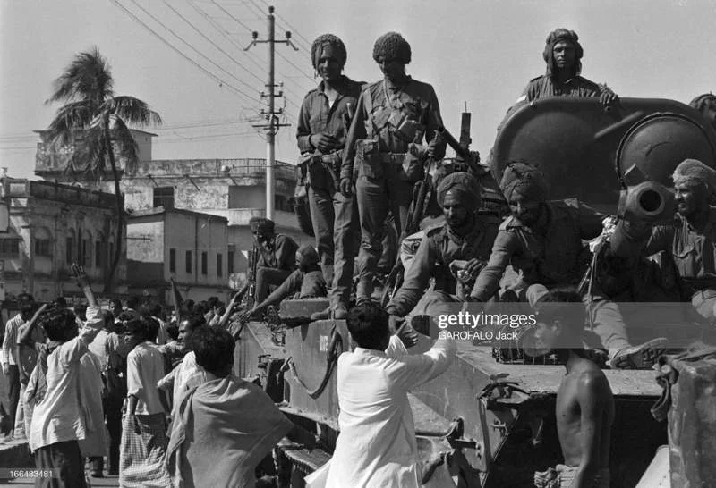
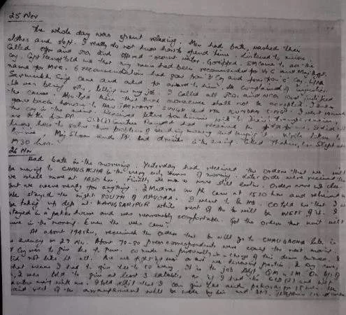
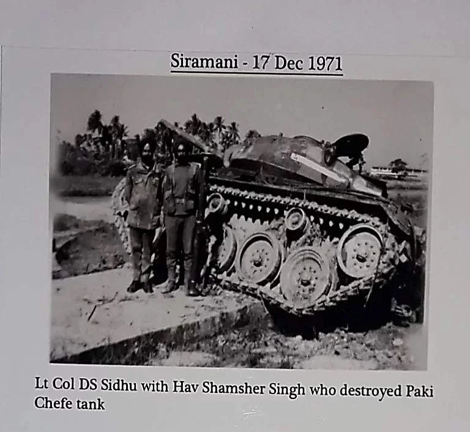
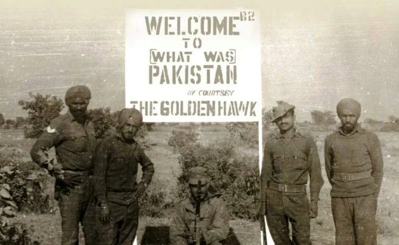
श्रेणी: बैटल गैलरी
रेजिमेंट: सिख रेजिमेंट
जून 1971 में, लेफ्टिनेंट कर्नल डीएस सिद्धू के नेतृत्व में 4 सिख को आंतरिक सुरक्षा कर्तव्यों में तैनात किया गया था दत्तपुलिया और बोयरा, बंगाल में, तत्कालीन पूर्वी पाकिस्तान के साथ अंतर्राष्ट्रीय सीमा के करीब। यह था 350 इन्फैंट्री ब्रिगेड का हिस्सा, इस ब्रिगेड की अन्य इकाइयाँ 1 जेएके राइफल्स और 26 मद्रास हैं। 63 कैवेलरी (टी-55) के अल्फा स्क्वाड्रन और 45 कैवेलरी के कुछ पीटी-76 टैंक समर्थन में थे। 22 नवंबर को, पाकिस्तान वायु सेना (पीएएफ) सेबर्स ने बटालियन की चौकियों पर बमबारी की - लेकिन नुकसान न्यूनतम था डेल्टा कंपनी के सिपाही निर्मल सिंह ने अपनी लंबी एलएमजी से एक एफ-86 सेबर जेट को मार गिराया। फ्लाइट लेफ्टिनेंट (बाद में एयर मार्शल और पाकिस्तान वायु सेना के 8वें प्रमुख) परवेज़ मेहदी क़ुरैशी को पद से हटा दिया गया कृपाण और बटालियन द्वारा कब्जा कर लिया गया था।
पूर्ण पैमाने पर युद्ध छिड़ने पर, अल्फा कंपनी, मेजर बीएस चहल के नेतृत्व में 4 सिख ने शुरू में मकापुर को सुरक्षित कर लिया गाँव, शत्रु क्षेत्र से कई किलोमीटर अंदर। तब हिजुली तक के क्षेत्र पर उनका प्रभुत्व था आक्रामक गश्त, जहां दुश्मन के साथ कई झड़पें हुईं। अगला शत्रु गढ़ कबाड़क नदी के पार चौगाचा था, जहाँ से दुश्मन लगातार भारतीय गाँवों पर गोलाबारी करते थे। 4 सिख के साथ संपर्क स्थापित करने के लिए 63 कैवेलरी के एक स्क्वाड्रन के साथ चौगाचा की ओर बढ़ने का आदेश दिया गया था शत्रु. मेजर एसएस दुग्गल और मेजर कंवलजीत के अधीन चार्ली और डेल्टा कंपनियों के अग्रिम तत्व सिंह, दुश्मन की रक्षा से बहुत प्रभावी और भारी मशीन गन, मोर्टार और तोपखाने की आग में आ गए चौगाचा में कबादक नदी पर। इसके बाद दुश्मन को मात देने का निर्णय लिया गया। अल्फ़ा और ब्रावो मेजर बीएस चहल और मेजर आरपी अवस्ती के नेतृत्व में कंपनियों ने नदी को थोड़ा ऊपर की ओर, खंड में पार किया एक टपकती देशी नाव में ताकत (एक समय में 10 आदमी), जो एक अभूतपूर्व युद्धाभ्यास था। शत्रु, संभवतः यह महसूस करते हुए कि उन्हें घेरा जा रहा है, उन्होंने अपना स्थान छोड़ दिया और चौगाचा को सुरक्षित कर लिया गया 23 नवंबर को.
बटालियन को दुश्मन के एक दुर्जेय इलाके और रक्षा की कुंजी बुरिंडा पर कब्ज़ा करने का आदेश दिया गया जेसोर का. 03/04 दिसंबर की रात को, अल्फा कंपनी ने बुरिंडा के उत्तरी छोर पर हमला किया और उसे अपने कब्जे में ले लिया। ब्रावो कंपनी ने तब अल्फा कंपनी के माध्यम से टी-55 टैंकों की एक टुकड़ी के साथ हमला किया, जबकि चार्ली कंपनी थी दुश्मन के वापसी के मार्ग को काटने के लिए, बायीं ओर से फ़्लैंकिंग चाल को अंजाम देना। के लिए लड़ाई बुरिंडा की शुरुआत 05 दिसंबर की दोपहर में हुई और अगली सुबह तक जमकर हंगामा हुआ। 4 सिख ने बड़ी मात्रा में हथियार और गोला-बारूद के साथ मिलकर पदों पर कब्जा कर लिया। ऑपरेशन में, यूनिट को कई हताहतों का सामना करना पड़ा - नेतृत्व में तीन अधिकारी घायल हो गए, लेकिन उन्होंने घायल होने से इनकार कर दिया खाली कराया गया। विरोधी पाकिस्तानी इकाई, 12 पंजाब ने हठपूर्वक बुरिंडा का बचाव किया, और उसे भारी नुकसान उठाना पड़ा कारण-कारण। इस हार ने जेसोर के आसपास पाकिस्तान की सुरक्षा की रीढ़ तोड़ दी; 07 दिसंबर को, पाकिस्तान की 107 ब्रिगेड जेसोर से दक्षिण की ओर खुलना की ओर पीछे हटने लगी।
4 सिख तेजी से दुर्गापुर-मालान्ची की दिशा में दुश्मन के निशाने पर था। भारी होने के बावजूद खनन मार्ग पर, पैदल सैनिक अब टी-55 टैंकों पर सवार होकर, खुलना की ओर दौड़ रहे थे, जो सबसे बड़ा मार्ग था। क्षेत्र में उपयुक्त रक्षात्मक स्थिति। पूर्व की ओर भैरब नदी बहती थी, पश्चिम की ओर दलदली नदी थी भूमि और दक्षिण में समुद्र था। दुश्मन की एकमात्र चिंता उत्तर की ओर थी, जहां पाकिस्तान का मुख्य केंद्र था सुरक्षा सिरामणि, श्यामगंज के गांवों और रेल-सड़क धुरी सह क्रॉसिंग पर थी। 4 सिख थे के माध्यम से लड़ने और रेलवे लाइन के पास एक सड़क अवरोध स्थापित करने का कार्य दिया गया जेसोर-खुलना रोड। इसका उद्देश्य अंतिम झटका देने से पहले पीछे वाले हिस्से को धमकाना और दुश्मन को फँसाना था। 15 दिसंबर को 1615 बजे 4 सिखों ने नौका स्थल से चार चरणों में हमला किया, प्रत्येक कंपनी पर कब्ज़ा कर लिया लगभग 500 गज, और फिर मजबूती से आगे बढ़ना। इसके लिए उन्हें संपूर्ण डिविजनल आर्टिलरी का समर्थन प्राप्त था कार्य. ब्रावो कंपनी। मेजर आरपी अवस्ती की कमान में, चरण 1 में लॉन्च किया गया और तीव्र गति से आगे बढ़ा दोनों किनारों से स्वचालित गोलीबारी, पहले 200 गज के भीतर ही कई लोग हताहत हुए। लेकिन इससे उन लोगों पर कोई असर नहीं पड़ा जो लक्ष्य हासिल होने तक हमले पर अड़े रहे।
चरण 2 में, क्षेत्र को और अधिक सुरक्षित करने के लिए, मेजर एसएस दुग्गल के नेतृत्व में चार्ली कंपनी को 1,800 बजे लॉन्च किया गया था। और चरण 3 के लिए एक मजबूत आधार प्रदान करें। 6 पंजाब और 15 फ्रंटियर ने दुश्मन की रक्षा को मजबूती से पकड़ रखा है बल, भाग गए थे। दुश्मन ने कंपनी को बेदखल करने का प्रयास किया, यहाँ तक कि एम-24 चाफ़ी से जवाबी हमला भी किया टैंक, जिन्हें वीर सिखों ने खदेड़ दिया था। हवलदार शमशेर सिंह ने उसकी बिल्कुल भी परवाह नहीं की व्यक्तिगत सुरक्षा, रेंगते हुए आगे बढ़े और करीब से 3.5 इंच रॉकेट लॉन्चर के साथ एक टैंक को गिरा दिया। तीखी लड़ाई के बाद. 16 दिसंबर की सुबह 0100 बजे तक चार्ली कंपनी का पूर्ण नियंत्रण हो गया था 1971, बड़ी मात्रा में हथियार और गोला-बारूद पर कब्ज़ा।
चरण 3 में, मेजर कंवलजीत सिंह के नेतृत्व में डेल्टा कंपनी को 16 दिसंबर को 0200 बजे प्रतिबद्ध किया गया था। जेसोर-खुलना रोड पर सड़क अवरोध स्थापित करने का उद्देश्य। यहाँ शत्रु सुरक्षा थी आग के अच्छे क्षेत्रों के साथ कंक्रीट की इमारतों में स्थित। सिक्ख बिजली की तरह दुश्मन पर टूट पड़े हमला करें, और बचाव पर कब्ज़ा कर लें, शेष सभी प्रतिरोधों को ख़त्म कर दें। 0500 बजे तक, डेल्टा कंपनी थी सड़क पर मजबूती से स्थापित हो गया। शेष शत्रु का सफाया सुबह सात बजे तक जारी रहा। द आखिरी बार कैप्टन एसबी गवारिया के नेतृत्व में अल्फा कंपनी को लॉन्च किया गया था, जिसके समर्थन में टैंकों की दो टुकड़ियां थीं। इसका उद्देश्य 16 दिसंबर को सुबह 0930 बजे तक रेलवे लाइन पर ब्लॉक स्थापित करना था। वे नीचे आये पहले कुछ मिनटों में दुश्मन की भारी गोलीबारी हुई और कई लोग हताहत हुए। निडर होकर, कंपनी ने दबाव डाला आगे बढ़े और रेलवे लाइन पर पहुंच गए।
इस प्रकार, 17 घंटे की लगातार लड़ाई के बाद, 4 सिखों ने अपने उद्देश्यों को हासिल कर लिया, जिससे उन्हें सफलता मिली। पाकिस्तान की 107 इन्फैंट्री ब्रिगेड और भारी क्षति पहुंचा रही है। अंततः यही पाकिस्तान की ओर ले गया 24 घंटे के अंदर खुलना में सरेंडर. अपने वीरतापूर्ण कार्यों के लिए बटालियन को बैटल ऑनर से सम्मानित किया गया - तीन वीर चक्र, दो सेना पदक और एक विशिष्ट सेवा पदक के साथ 'सिरामणी'।

मोबाइल पर खोलें
अपने फोन पर अंग्रेजी, हिंदी या पंजाबी में देखने के लिए इस QR कोड को स्कैन करें।